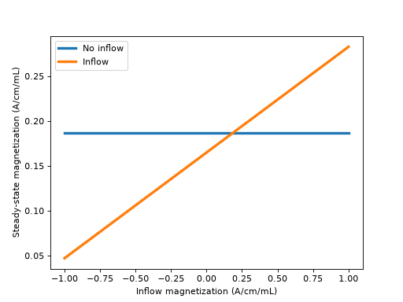
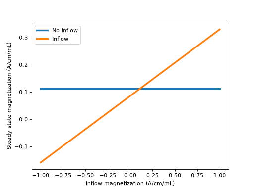

dcmri.Mz_ss#
- dcmri.Mz_ss(R1, TR, FA, v=1, Fw=0, j=None, me=1)[source]#
Steady-state longitudinal tissue magnetization.
See section Longitudinal relaxation for more detail.
- Parameters:
R1 (array-like) – Longitudinal relaxation rates in 1/sec. For a tissue with n compartments, the first dimension of R1 must be n. For a single compartment, R1 can be scalar or a 1D time-array.
TR (float) – repetition time.
FA (float) – flip angle.
v (array-like, optional) – volume fractions of the compartments. For a one-compartment tissue this is a scalar - otherwise it is an array with one value for each compartment. Defaults to 1.
Fw (array-like, optional) – Water flow between the compartments and to the environment, in units of mL/sec/cm3. Generally Fw must be a nxn array, where n is the number of compartments, and the off-diagonal elements Fw[j,i] are the permeability for water moving from compartment i into j. The diagonal elements Fw[i,i] quantify the flow of water from compartment i to outside. For a closed system with equal permeabilities between all compartments, a scalar value for Fw can be provided. Defaults to 0.
j (array-like, optional) – normalized tissue magnetization flux. j has to have the same shape as R1. Defaults to None.
me (array-like, optional) – equilibrium magnetization of the tissue compartments. If a scalar value is provided, all compartments are assumed to have the same equilibrium magnetization. Defaults to 1.
- Returns:
Magnetization in the compartments after a time T.
- Return type:
np.ndarray
Example
Compute steady-state magnetization with inflow magnetization (mi) ranging from fully inverted to equilibrium. Compare against magnetization of an isolated tissue without flow.
Import packages:
>>> import numpy as np >>> import matplotlib.pyplot as plt >>> import dcmri as dc
Define constants:
>>> FA, TR = 12, 0.005 >>> R1 = 1 >>> f, v = 0.5, 0.7 >>> mi = np.linspace(-1, 1, 100)
Compute magnetization without/with inflow:
>>> m_c = dc.Mz_ss(R1, TR, FA, v)/v >>> m_f = [dc.Mz_ss(R1, TR, FA, v, f, j=f*m)/v for m in mi]
Plot the results:
>>> plt.plot(mi, mi*0+m_c, label='No inflow', linewidth=3) >>> plt.plot(mi, m_f, label='Inflow', linewidth=3) >>> plt.xlabel('Inflow magnetization (A/cm/mL)') >>> plt.ylabel('Steady-state magnetization (A/cm/mL)') >>> plt.legend() >>> plt.show()
(
Source code,png,hires.png,pdf)
Note the magnetization of the two tissues is the same when the inflow is at the steady-state of the isolated tissue:
>>> m_f = dc.Mz_ss(R1, TR, FA, v, f, j=f*m_c)/v >>> print(m_f - m_c) 0.00023950879616352339
Now we consider the same situation again, this time for a two- compartment tissue with one central compartment that exchanges with the enviroment.
>>> R1 = [0.5, 1.5] >>> v = [0.3, 0.6] >>> PS = 0.1
Compute magnetization without inflow:
>>> Fw = [[0, PS], [PS, 0]] >>> M_c = dc.Mz_ss(R1, TR, FA, v, Fw)
Compute magnetization with flow through the first compartment:
>>> Fw = [[f, PS], [PS, 0]] >>> M_f = np.zeros((2, 100)) >>> for i, m in enumerate(mi): >>> M_f[:,i] = dc.Mz_ss(R1, TR, FA, v, Fw, j=[f*m, 0])
Plot the results for the central compartment:
>>> plt.plot(mi, M_c[0]/v[0] + mi*0, label='No inflow', linewidth=3) >>> plt.plot(mi, M_f[0,:]/v[0], label='Inflow', linewidth=3) >>> plt.xlabel('Inflow magnetization (A/cm/mL)') >>> plt.ylabel('Steady-state magnetization (A/cm/mL)') >>> plt.legend() >>> plt.show()

We can verify again that the magnetization is the same as that of the isolated tissue when the inflow is at the isolated steady-state:
>>> m_c = M_c[0]/v[0] >>> M_f = dc.Mz_ss(R1, TR, FA, v, Fw=f, j=f*m_c) >>> print(M_f[0]/v[0] - m_c) 0.0002984954839493209